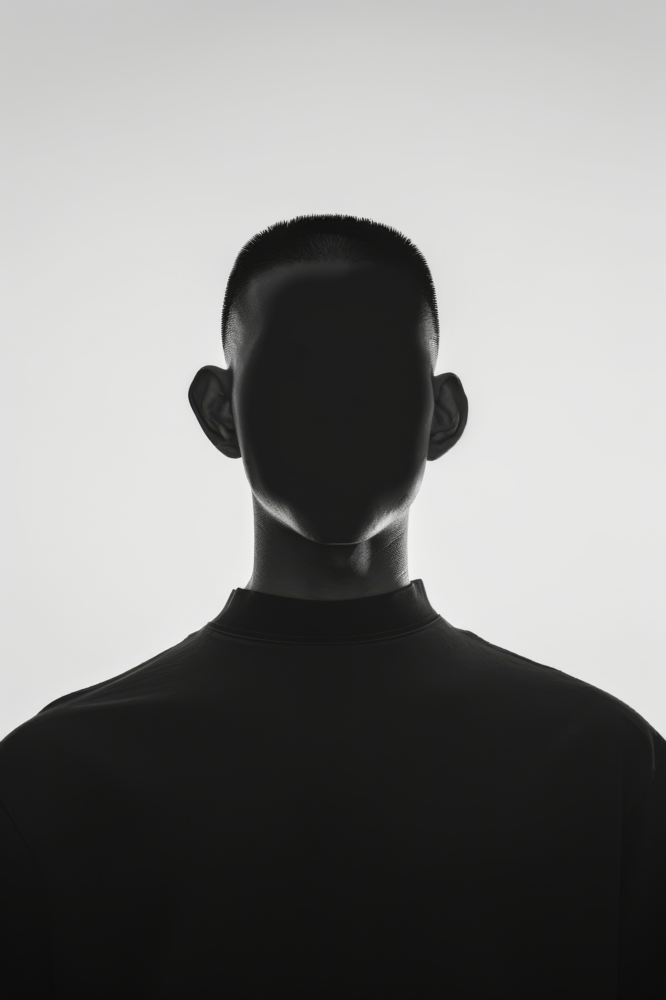

Bienvenue à mon portfolio

Je suis un étudiant en 2e année de génie logiciel, passionné par le développement de logiciels et les tests automatisés. J’aime créer des scripts de test en Python permettant d’automatiser entièrement le contrôle qualité d’un site web. Ces scripts remplacent plusieurs jours de test manuel par quelques minutes d’exécution. Je suis motivé à contribuer à des projets créatifs, inspirants et de haute qualité.
Voici mes projets
PROJET 1
PROJET 2
PROJET 3
PROJET 4